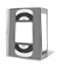

| L'onglet "Logiciel" vous permet de télécharger la toute dernière version de Kinovea. Cliquez sur le bouton "Télécharger", choisissez un dossier sur votre disque dur où placer le nouveau fichier d'installation et lancez le téléchargement en cliquant sur OK. |
| Les manuels d'utilisations peuvent évoluer ou être corrigés, des
traductions peuvent être mises à disposition. Cochez les manuels que vous souhaitez télécharger puis cliquez sur "Télécharger". |
|  | Les vidéos d'aide disponibles peuvent également être modifiées ou complétées par de nouvelles. Cochez les vidéos qui vous intéressent puis cliquez sur "Télécharger". Les vidéos pour lesquelles vous possédez la dernière version n'apparaissent pas dans la liste. |